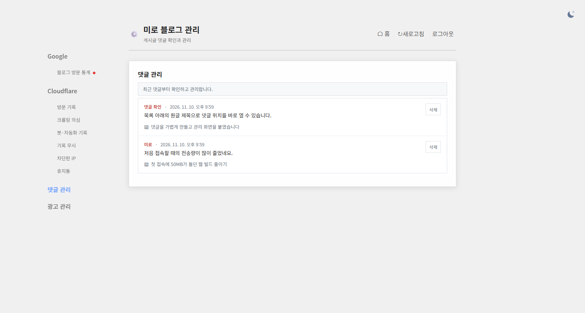
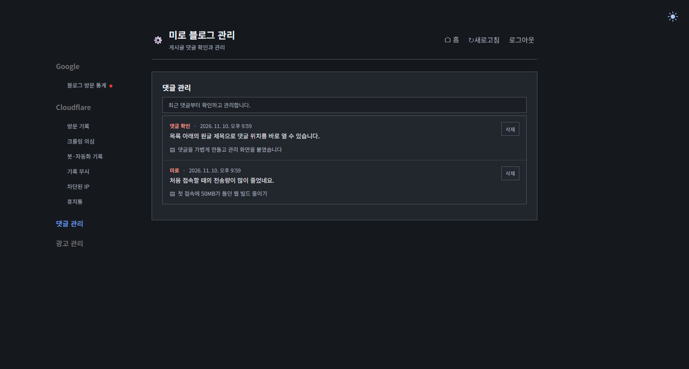
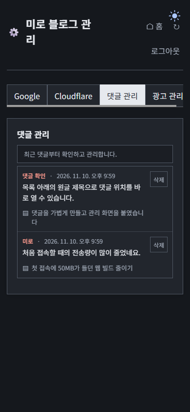

Tracefolio REPORTS & ISSUES
Tracefolio REPORTS & ISSUES관리자 댓글 목록의 색과 구분선 정리
완료작성자 강조색, 옅은 구분선, 차분한 원글 링크를 적용했습니다.
작업 결과
관리자 댓글 탭의 행 배치를 유지하고 티스토리 참고 화면과 비슷한 시각적 계층으로 다듬었습니다.
변경 내용
적용 내용
admin/comments-panel.html의 CSS에서 작성자에 붉은 강조색을 사용하고, 날짜·원글 제목·삭제 버튼에는 차분한 보조색을 적용했습니다.- 목록 안내 배경과 행 구분선을 옅게 조정했습니다. 어두운 테마는 기존 대시보드 테마의 배경과 테두리 값을 사용합니다.
- 모바일에서 댓글·광고 메뉴의 글자가 세로로 접히지 않도록 하고, 선택된 댓글 메뉴의 대비를 높였습니다.
.admin-comments .comment-meta strong{color:var(--comment-author);font-weight:600}
.admin-comments li+li{border-top:1px solid var(--comment-divider)}
.admin-comments .comment-post{display:inline-flex;align-items:baseline;gap:6px;max-width:100%;color:var(--comment-secondary);font-size:.8rem;text-decoration:none;text-underline-offset:3px}
대화 기록
- 사용자 (시각 미기록) · “레이아웃 좋은데.. 음.. 디자인 좀 해줘 티스토리랑 비슷하게”
- AI (21:59 KST) · 기존 행 순서는 유지하고 목록의 색, 구분선, 모바일 메뉴를 다듬었습니다.
- AI (22:00 KST) · 밝은·어두운·모바일을 확인하고 운영 Worker에 최종 스타일을 배포했습니다.
검증
- 같은 대시보드 렌더러에 샘플 댓글을 넣어 밝은 테마, 어두운 테마, 390px 모바일을 확인했습니다. 운영 Worker에서 최종 CSS와 미로그인 목록 응답 401을 확인했습니다.




남은 사항
운영 Google 계정 로그인 상태의 화면은 미확인입니다. 운영 CSS와 로컬 렌더링을 구분해 확인했습니다. 전역 및 프로젝트 전용 지침 변경 사항은 없습니다.
작업 시간
- 제안 시간: 4~7분
- 실제로 완료된 시간: 기능 배포·확인 2분 22초. 2026-11-10 21:57:55 시작, 22:00:17 KST 완료.
- XERJ: 미사용 — 지정 검색 도구 미사용.